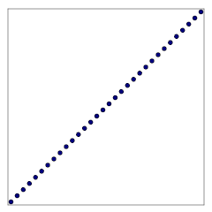
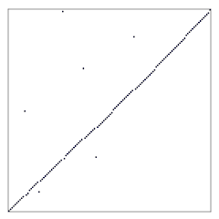
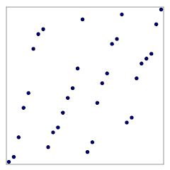
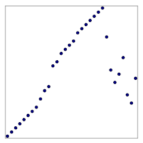
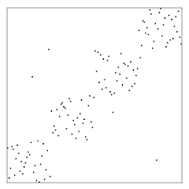
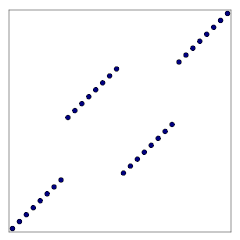
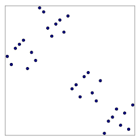

2023
Heptodes documents and other content in doc directories
are licensed under the Creative
Commons Attribution 4.0 License.
Source code licensed and code samples are licensed under the Apache 2.0 License.
The CC BY 4.0 license requires attribution. When samples, examples, figures, tables, or other excerpts, are used in a tutorial, or a subdivision thereof, it is sufficient to provide the complete source and license information once. This must be close to the beginning, such as in an early acknowledgments slide. If this is done, only short notes are required to be placed with each usage, such as in figure captions.
This document describes the main ideas, implementation and design of an investigation into some variations on mergesort. Summary results are presented. This project is a side project to a side project, and so time for exploration and presentation of results was severely constrained. There are various consequences of this.
This documentation is very rough. With more time the presentation could be made more concise and clear.
Performance evaluation is almost solely a strict count of comparisons.
Little consideration is given to locality of reference, or to any practical sorting considerations.
No ‘field study’ was conducted into what sort patterns arise in practical situations.
Code developed for the project is very unpolished, with little optimization.
Little consideration was given to storage.
Code was developed in Rust. This choice was made in the project out of which this (sub-)project arose, and not because it was thought best for this project.
We only compare performance against standard mergesort, and do not survey enhancements to mergesort.
The project was framed as an exploration into comparison sorting where the count of the number of comparisons is the overriding efficiency criterion.
Comparison sorting is sorting in which the only question we can, so-to-speak, as of the data is which of two elements (members) comes before the other. The classic complexity bound is that, if all input arrangements are equally likely, then the average number of comparison requests must be at least \(\log_2(N!)\).
Mergesort is the standard against which we compare our results. Some reasons for this follow.
We did not have the resources to compare with enhancements to mergesort and in particular those known as adaptive mergesorts.
The methods that we explored we call information transfer mergesorts. There is a significant distinction between these and many adaptive mergesorts. An adaptive mergesort seeks to adapt the mergesorts to detectable patterns. Doing so enables them to be much more efficient for special cases, while incurring what might be called a detection cost. In contrast, the methods herein discussed fit within the mergesort. The idea is to convery information from one stage of the mergesort to the next. Each stage is modified so that it can process the two subsorts more efficiently for some patterns of input arrangements. One way of drawing the contrast is that adaptive methods seek to adapt to patterns, while information transfer conveys smaller-scale information outwards. The merge stages do not ‘know’ anything about patterns, and faster processing for certain large-scale patterns happens almost ‘accidentally’ from the perspective of the mechanistic merging. One task of information transfer is to take the summarized information transferred from the two inbound subsorts and condense it into a new summary for a subsequent sort.
The bound on performance of comparison sorting cannot be broken. However, it does not have quite the universal meaning one might take. Let us put this succinctly.
A change in algorithm performance that affects a vast set of cases may have little impact on the average performance over a vastly vast set of possibilities.
The point is that improving the performance over a large set of special-case patterns does not necessarily, from the perpective of bounds, mean that the average performance be substantially degraded. This is because \(N!\) possible arrangements is utterly vast. (We are assuming non-small sort problems, such as when \(N>1000\).)
That said, mergesort is very efficient, and so incorporating logic to handle, even in an implicit manner, a set of patterns more speedily, will almost inevitably degrade average performance, especially at early small subsort stages.
At this point we outline the patterns that we will first discuss, and later analyse. Some of this might seem ponderous, with excessive detail for an early stage in the discussion. The rationale is that we do not wish to duplicate part of the presentation later.
|  |  |
| (a) | (b) |
We will represent sort tasks graphically as shown. We are not concerned about the actual member values. Rather, we focus on the input and output orderings. In these drawings the elements of the sort set are shown as dots whose x-coordinate is given by the input-order index and the y-coordinate is given by the output-order index. The figure shows two such drawings. Plot (a) shows a task in which the entire set is presorted: the input and output indices are the same. Plot (b) shows a set of data that is mostly presorted but for which some members have been displaced. This represents the scenario where a dataset has been sorted but a proportion of members have been updated with new values. We will in later analysis consider sorting performance as the proportion of displacement is increased. Of particular importance is that performancy does not degrade rapidly with small proportion of updates to member values.
|  |  |
| (a) | (b) |
The next figure shows two common scenarios. Plot (a) illustrates the task of merging separately-sorted datasets. A mergesort methods that handles presorted data should perform well if, for example, the task is to merge 4 presorted sets of equal size. Our analysis should consider not only this but also scenarios where the number of sets to be merged is not a power of 2, and where the sizes are not uniform. Plot (b) illustrates the scenario where a previously sorted set is augmented with new data. The new data is simply appended. If the number of new members is proportionately small, the sort performance should be high.
We use the word arrangement to refer to a unique set of input-output indices. It is analogous, if not synonymous, with permutation. The plots are like permutation matrices with a dot everywhere such a matrix contains a 1. We use pattern to refer to a set of arrangements with a common structure. We can think of patterns as general, parameterized by proportions and counts of sub-patterns.
|
 |
| (a) | (b) |
The next figure, plot (a), shows another key pattern. This is one with grouped members. For example, the data may have been preprocessed with a bucket sort. Scenarios that may present this kind of pattern are less likely to have uniform sizes of sub-grouping, and so sort performance should be evaluated more on uneven or otherwise non-advantageous parameterizations.
|  |  |
| (a) | (b) |
Later we will extend our analysis to a few other patterns that stretch the capabilities of sorting algorithms while arguably having less application to common real-world scenarios. In the preceding figure, plot (b), we apply the displacement process described earlier to plot (a). This approximately simulates an imperfect grouped presort. The illustrations of the next figure, plots (a) and (b), show random blockwise patterns that mimick roughly grouped data.
As discussed earlier, the general approach to mergesort under consideration involves the transfer of information from one stage to another. We are combining this with ideas from DAGs of order-dimension 2. These ideas suggest what information might be profitably maintained as the algorithm goes up the divide-and-conquer hierarchy. The ideas also provide methods for updates with bounded performance guarantees.
![Specific dataset members, and chains of members, that we use to carry information from one mergesort stage to the next. The members are considered to be points with input and output indices as the x and y coordinatess. The head of the sort (the first member) is the “southernmost” member and the tail is the “northernmost”. We call the elements that are first and last in the unsorted data anchors. During our algorithms we often maintain chains of members as shown. One is the SW chain from W anchor to S head, selecting the most southerly member as the chain proceeds eastwards.](figs/standard_lozenge.svg)
The full information is illustrated in the figure. Elements that have so far been sorted in one of the subsorts can be considered to be vertices in a graph, each with a unique index and a value. The illustration shows the process for a stable sort, thought for simplicity one can think of unique values. The approach suggested by graphs of order-dimension 2 is to record shrink-wrapped chains of vertices. We can find these either working left and right across indices, or up and down across values. We call the element with the lowest index the “west anchor”, We scan through elements, forming two chains of elements with the lowest and highest values encountered so far. Then we do the same from the element with the highest index, that is the east anchor, scanning down indices, forming two more chains. These chains form a kind of lozenge shape.
![Combining the chains from two subsorts. This illustration has left and right size-8 sorts. Since the left head precedes the right head, the combined SW chain is simply the left SW chain. Likewise the NE chain from the right becomes the combined chain because the right tail comes after the left tail The other two chains necessarily require splicing. The SE combined chain begins with the whole of the right SE chain. The part of the left SE chain after the right head is discarded and the remainder is appended to the end of the right SE chain. The ideas of posets of order-dimension 2 lead to the realization that the comparisons required are O(N). This is because we only test members in the left once in the whole sort for each discard, and once per chain join for retention.](figs/TwoLozenge.jpg)
We learn from examination of DAGs of order-dimension 2 that we can merge lozenges as mergesort unfolds. When we merge two subsorts we only need traverse elements in the chains when they are removed. Consider the SW chains of two subsorts, that is those that begin at their east anchors and end at their south heads. The chain in the right subsort remains unchanged, except that we need only append those elements in the left subsort’s chain that come before the right south head in the sort. The work we need to do is to find the cut, being potentially some part beginning with the anchor being discarded and potentially some part (any remaining) being appended. If we begin at the anchor and search for the cut point from there, the overall number of comparisons is \(O(N)\).
A key question, that is asnwered implicitly or explicitly, is where the anchors lie relative to the ranges of the other subsort. That is, to ask whether the left east anchor lies between the right head and tail, or if it comes before or after. Likewise, we find the relative location of the right west anchor relative to the left head, right head range.
Let us consider, in isolation, the task of comparing the anchor of one subsort with the value range of another subsort, and performing the same comparison with the subsort exchanged.
![Ranges of members in subsorts relative to key members. The process of combining the chains of two subsorts involves comparisons between the head and tail members of both sides. See the earlier figure. It involves comparisons between these and the left E anchor and right W anchor. Overall we make use of two ranges. On the left, the extent is that of all the data from head to tail, and dividing the range is the E anchor. We label values outside of this range as either before (B) or after (A), and we subdivide the range into upper (U) and lower (L) by the E anchor. A similar division of ranges of values on the right uses right subsort W anchor.](figs/AnchorRanges.jpg)
| Left anchor, right interval | Right an- // A | chor, lef- // U+L | t interval // B |
|---|---|---|---|
| A | \(\times\) | \(\checkmark\) | \(\checkmark\) |
| U+L | \(\checkmark\) | \(\checkmark\) | \(\checkmark\) |
| B | \(\checkmark\) | \(\checkmark\) | \(\times\) |
| Left anchor, right interval | Right a- // A | nchor, l- // U | eft int- // L | erval // B |
|---|---|---|---|---|
| A | \(\times\) | \(\times\) | \(\checkmark\) | \(\checkmark\) |
| U | \(\times\) | \(\times\) | \(\checkmark\) | \(\checkmark\) |
| L | \(\checkmark\) | \(\checkmark\) | \(\times\) | \(\times\) |
| B | \(\checkmark\) | \(\checkmark\) | \(\times\) | \(\times\) |
This is illustrated. The left anchor (circle) may be above (A), within (U+L) or below (B) the range of values in the right subsort. There are three possibilities for the two cases, giving nine in total, but two are immediately impossible. The tricky aspect of approaching this as a sequence of comparisons, which is what our overall problem statement constrains us to do, is that there is no real symmetry. The 7 valid possibilities are shown in the first table. At least 3 comparisons will be required. We can introduce symmetry by first comparing anchors. Then each anchor is placed in one of four ranges, splitting the within-range into upper (U) and lower (L) relative to the other anchor. This expands the combinations to 16. However, as shown in the second table, only 8 are possible. Comparing anchor values first distinguishes between the top-left and bottom-right 4, and exactly 3 comparisons are required overall. Actually not quite: if either anchor is at its subsort’s head or tail, either the second or third can be elided.
![Half of the arrangements for size-4 merge for left anchor > right anchor. The first number shows, for each case, the number of comparisons required in the classic sort. The total is 4\times 4 + 8\times 5 = 56 = 24+32. The sort using anchor predicates has total comparisons 58, since one case is reduced to 3 and one increased to 6, and one increased from 5 to 6. The expensive case (4 to 6) is really, after the 2 subsort comparisons, n/2=2 for the classic sort, and 3+n/4 using anchor comparisons, both on average for random arrangements.](figs/TwentyFour.jpg)
The first two stages in the hierarchy of a mergesort deserve special attention. Specifically let us consider the merging of two sorted pairs that complete a 4-way sort. First let us assume that we begin the second stage by comparing the anchors from the pair subsorts. We can divide the arrangements into sets according to the results, and only consider one. The 12 arrangements arising when the right west anchor sorts ahead of the left east anchor are shown in the figure. If the data is uniformly scrambled, the optimal total count of comparisons is \[ \lceil 12 \log_2(24)\rceil = 56 . \] Perhaps surprisingly, mergesort in classic form achieves this, requiring 4 comparisons for 4 arrangements and 5 comparisons for 8 arrangements.
The comparisons required if we find and use anchor comparisons is more complex. Consider the arrangements laid out in the figure. Arrangement A only requires 3 comparisons, one for each of the pair subsorts, and the comparison between the 2 anchors. In cases B, C and D we do not need separate comparisons for the left anchor against the right head and tail, but we need 1 between the left head and right anchor. So that is 4 comparisons before actually merging. Then, during merge, arrangements C and D require the initial comparison between left and right heads, totalling 5 comparisons. The arrangements E, F and G are analogous, and are \(180^\circ\) rotations of B, C and D.
The remaining arrangements are more elaborate, and involve more comparisons than the classic sort. Arrangement I involves a comparison between the left head and right tail, and does not use the comparison between the anchor values. Arrangement H also does not use left anchor and right tail. More than that, K is strictly inefficient in that we compare the left head and right tail, but we should know that given that we have to compare the two tails.
In summary, this approach requires 59 comparisons to sort 4 values. Some of the increase is inefficiency. However some, in the manner of Huffman (or other variable-length) codes, arises as we increase the efficiency with presorted data, and similar patterns for larger sorts.
Since mergesorting is performed in stages, and since we implemented experiments on vector data, we wrote a non-recursive iterator. This provides a convenient means to organize work. The figure show the steps involved in sorting a vector of 16 elements. The ranges for the merges in each step are shown in the table below. In each step a full range results from merging two subsorts, one with range \([\text{midpoint} - \text{extent}, \text{midpoint})\), and the other with range \([\text{midpoint} , \text{midpoint} + \text{extent})\). The table shows manipulation for u8 data type. Typically a larger datatype would be used. We found it simplest to implement the maximum size sort and use a subset. For u8 that means (a) a size-256 sort (255 steps), (b) seeding with the final step of a size-256 sort, shown as step -1 in the table, and (c) just using the first 15 steps for, say, a size-16 sort. (Note, on a point of fine detail, that there is a slight difference between the step -1 and step 254 in the negation pattern.)
| Ste | Range | mid\(\pm\)extent | mid | extent | return | negation | mask | xor |
|---|---|---|---|---|---|---|---|---|
| -1 | \(1000\,0000\) | \(1000\,0000\) | \(1000\,0000\) | — | ||||
| 0 | \([0,2)\) | \(1\pm 1\) | \(\{8\}-4-2-1\) | \(0000\,0001\) | \(\circ\) | \(0111\,1111\) | \(1111\,1111\) | \(1111\,1111\) |
| 1 | \([2,4)\) | \(3\pm 1\) | \(\{8\}-4-2+1\) | \(0000\,0001\) | \(\circ\) | \(0111\,1110\) | \(1111\,1111\) | \(1\) |
| 2 | \(\;\;[0,4)\) | \(\;\;2\pm 2\) | \(\{8\}-4-2\) | \(0000\,0010\) | \(0111\,1110\) | \(1111\,1110\) | — | |
| 3 | \([4,6)\) | \(5\pm 1\) | \(\{8\}-4+2-1\) | \(0000\,0001\) | \(\circ\) | \(0111\,1101\) | \(1111\,1111\) | \(11\) |
| 4 | \([6,8)\) | \(7\pm 1\) | \(\{8\}-4+2+1\) | \(0000\,0001\) | \(\circ\) | \(0111\,1100\) | \(1111\,1111\) | \(1\) |
| 5 | \(\;\;[4,8)\) | \(\;\;6\pm 2\) | \(\{8\}-4+2\) | \(0000\,0010\) | \(0111\,1100\) | \(1111\,1110\) | — | |
| 6 | \(\;\;\;\;[0,8)\) | \(\;\;\;\;4\pm 4\) | \(\{8\}-4\) | \(0000\,0100\) | \(0111\,1100\) | \(1111\,1100\) | — | |
| 7 | \([8,10)\) | \(9\pm 1\) | \(\{8\}+4-2-1\) | \(0000\,0001\) | \(\circ\) | \(0111\,1011\) | \(1111\,1111\) | \(111\) |
| 8 | \([10,12)\) | \(11\pm 1\) | \(\{8\}+4-2+1\) | \(0000\,0001\) | \(\circ\) | \(0111\,1010\) | \(1111\,1111\) | \(1\) |
| 9 | \(\;\;[8,12)\) | \(\;\;10\pm 2\) | \(\{8\}+4-2\) | \(0000\,0010\) | \(0111\,1010\) | \(1111\,1110\) | — | |
| 10 | \([12,14)\) | \(13\pm 1\) | \(\{8\}+4+2-1\) | \(0000\,0001\) | \(\circ\) | \(0111\,1001\) | \(1111\,1111\) | \(11\) |
| 11 | \([14,16)\) | \(15\pm 1\) | \(\{8\}+4+2+1\) | \(0000\,0001\) | \(\circ\) | \(0111\,1000\) | \(1111\,1111\) | \(1\) |
| 12 | \(\;\;[12,16)\) | \(\;\;14\pm 2\) | \(\{8\}+4+2\) | \(0000\,0010\) | \(0111\,1000\) | \(1111\,1110\) | — | |
| 13 | \(\;\;\;\;[8,16)\) | \(\;\;\;\;12\pm 4\) | \(\{8\}+4\) | \(0000\,0100\) | \(0111\,1000\) | \(1111\,1100\) | — | |
| 14 | \(\;\;\;\;\;\;[0,16)\) | \(\;\;\;\;\;\;8\pm 8\) | \(\{8\}\) | \(0000\,1000\) | \(0111\,1000\) | \(1111\,1000\) | — | |
| 15 | \(0000\,0001\) | \(\circ\) | \(0111\,0111\) | \(1111\,1111\) | \(1111\) | |||
| \(\vdots\) | ||||||||
| 253 | \(0100\,0000\) | \(0100\,0000\) | \(1100\,0000\) | — | ||||
| 254 | \(1000\,0000\) | \(0000\,0000\) | \(1000\,0000\) | — |
The key concept employed in our chosen algorithm is that the mid-points for ranges are expressed consistently as \(\pm\) switches. For example, the first step has mid-point = 1, but we express this as \[1 = 8-4-2-1.\] We go further when embedding in a size-256 sort. That is, using notation in common with the table, \[1=128-64-32-16-8-4-2-1 = \{8\}-4-2-1.\]
The algorithm is then designed in logical steps.
For sort sizes that are not powers of 2, the sequence must be appropriately truncated. We have not examined this thoroughly. It is actually only necessary to look at the mid-oint, and otherwise we can just truncate the upper range to the size. Our current method is to check to see if the mid-point is within range (leaves any range above it) and if not, shift the extent up to the next power of two and recalculate the mid-point. Since we then proceed to the next step, that step can return the extent to 1. Crudely this might mean \(O(\log(N^2))\) maximum work. However, it may be provable that for each time a bit shift happens more than once at a lower shirt position, one at a higher level is necessarily not skipped. This might mean that the work is maximally proportional to \(\lceil\log_2(N)\rceil\).
The project discussed here originated as a side project of a side project. The thread connecting these is partially ordered sets of order-dimension 2, along with dominance drawings. Let us review these.
A good starting point is st-planar graphs that are transitively irreducible. An st-planar graph is a DAG with one external source and one external sink, and without crossings. Transitive reduction is the removal of edges that are not needed for reachability. That is to say, if vertex B can be reached from A and C from B, then we remove any edges from A to C, since C is transitively reachable from A. We say that a DAG is transitively irreducible if no edges can be removed by transitive reduction.
The vertices of st-planar graphs form a partially ordered set. If we number the edges by depth-first search (DFS) in two ways, we can use the numerings as coordinates in a plane such that one vertex is reachable from another if and only if it is placed above and to the right. The two DFSs are executed by either visiting the leftmost of rightmost children first. Conversely, we can begin with the coordinates from the two DFSs and place them in a drawing, called a dominance drawing. We can recover the edges by adding edges between vertices that are reachable by the rule of above and to the right, and not add edges that would be removed by transitive reduction. The graph will be correctly recovered by this procedure if and only iff the vertices form a poset of order-dimension 2.
The task of comparison sorting is much like the task of placing vertices in a dominance drawing. It is as if we have been given the x-coordinates as a contiguous set of integers, and we can compare the relative y-coordinate location of any two vertices.
One interesting perspective on comparison sorting is that it is an implied task within dominance drawing construction. In other words, any algorithm that constructs the dominance drawing of a set of values necessarily sorts those values. Equally, every sort task can be represented by a DAG of order-dimension 2. Now, the two coordinates for the vertices are obtained as the children-after-parents sequence of vertex visitations ina DFS. Therefore we may try to find algorithms that exploit properties of the graph. We might, for example, expect that we can construct dominance drawings more efficiently when the graph is planar or a tree.
Using knowledge of one coordinate, and the ability to do pairwise comparisons of the other coordinates (via values, which have the ordering), it is possible to construct one of the DFS trees. More generally, it is possible to identify all the leftmost (or all the rightmost) parents of every vertex. Equally one can identify all the rightmost (or all the leftmost) children. The simplest version of this process is a sequential sweep. However, since we are interested in mergesorts with their divide-and-conquer approach, we describe a block-merge step.
Consider a completed block, that is a set of vertices, contiguous in the x-coordinates. By complete we mean that all vertices with parent internally in the block are connected to it, and that the leftmost parent is connected. Suppose that we wish to merge the block with a similar one to the left. The only vertices in the right block that connect with those in the left are the unparented ones. So we need to maintain a chain of these. This chain is the SW chain in the lozenge.
Scan through the vertices in the left block, from right to left. Mainly those in the SE chain in the lozenge will be leftmost parents. This is because transitive reduction means that mostly those in the NE and SE chain will be parents. Further, the rightmost vertex in the left block will be a parent more to the left of any in the others in the NE chain. Thus basic st-planar graphs can be constructed mostly traversal of the left block’s SE chain and the right block’s SW chain.
![An illustration of how transitive reduction simplifies, fairly generally, maintenance of a front, that is a set of leaf or root vertices. The task illustrated is for merging of two sets of vertices and maintaining the set of most-SE vertices, which are, incidentally, leaves in a co-dominance graph. The left drawing has populated regions U, V and W where U+V is the set of vertices for which there are no vertices to the S and E. When we combine with a block of vertices on the right, the vertices in the front T are to the S and E of those in U. Therefore the combined front is T+V.](figs/FrontMerge.jpg)
This algorithm enables us to construct one DFS tree. If the DAG is a tree, then one DFS tree can be found from the other by reordering children. Maintaining the SE and SW chains is relatively straightforward task. The aforementioned traversal is like a mergesort of the two chains beginning at the anchor points, and this ends when one of the chains is exhausted. Without loss of generality assume that the SW chain of the right block is exhausted. In this case the following apply.
For this project we implemented three versions of mergesort. The approach in all cases was to minimize comparisons. Other matters of efficiency were largely disregarded. Furthermore, the modified mergesorts made much use of auxiliary data structures. The three versions were as follows.
Classic mergesort.
“Skipless” mergesort. This is much like mergesort, but one that uses anchor points and the comparison strategies set out in the 4-way sort section above. This accelerates for simple sequential patterns, specifically when an anchor equals a head or tail. This also creates and maintains the chains. What it does not do is the use the chains to skip work.
“Pure” (elaborated) mergesort. This is like the skipless mergesort, but uses the chains to skip work. We did not explore the best strategies for skipping. Maintenance of chains is rather more complicated and expensive when skipping. We used the methods outlined earlier that are \(O(N)\)-bounded.
Perhaps not surprisingly, the skipless method is generally more efficient than the pure method for small sort stages. The more expensive bookkeeping of the pure method is not offset by benefits of skipping work. Even in later stages the pure method introduces costs such that it is a bit more expensive over uniformly random input arrangements.
We present results below for the three methods, along with a blend that uses the skipless method for the smaller subsorts and switches to the pure methods for subsequent larger sorts. Since the skipless method maintains the chains, this switch is seamless.
| Stage | Classic … | … | … | Skipless … | … | … | Pure … | … | … | Blend |
|---|---|---|---|---|---|---|---|---|---|---|
| 0 | 0.0+2048.0 | 0.000+0.500 | 0.500 | 0.0+2048.0 | 0.000+0.500 | 0.500 | 0.0+2048.0 | 0.000+0.500 | 0.500 | 0.500 |
| 1 | 0.0+2730.8 | 0.000+0.667 | 0.667 | 1536.5+1448.6 | 0.375+0.354 | 0.729 | 2389.7+1364.0 | 0.583+0.333 | 0.916 | 0.729 |
| 2 | 0.0+3273.7 | 0.000+0.799 | 0.799 | 1152.6+2677.0 | 0.281+0.654 | 0.935 | 1808.0+2571.4 | 0.441+0.628 | 1.069 | 0.935 |
| 3 | 0.0+3639.7 | 0.000+0.889 | 0.889 | 671.6+3445.0 | 0.164+0.841 | 1.005 | 1091.6+3444.4 | 0.267+0.841 | 1.107 | 1.005 |
| 4 | 0.0+3855.5 | 0.000+0.941 | 0.941 | 360.2+3799.9 | 0.088+0.928 | 1.016 | 635.1+3956.9 | 0.155+0.966 | 1.121 | 1.121 |
| 5 | 0.0+3972.0 | 0.000+0.970 | 0.970 | 186.4+3957.3 | 0.046+0.966 | 1.012 | 362.9+4164.1 | 0.089+1.017 | 1.105 | 1.105 |
| 6 | 0.0+4033.7 | 0.000+0.985 | 0.985 | 94.4+4029.8 | 0.023+0.984 | 1.007 | 202.3+4205.6 | 0.049+1.027 | 1.076 | 1.076 |
| 7 | 0.0+4063.8 | 0.000+0.992 | 0.992 | 47.8+4062.7 | 0.012+0.992 | 1.004 | 113.1+4192.9 | 0.028+1.024 | 1.051 | 1.051 |
| 8 | 0.0+4079.8 | 0.000+0.996 | 0.996 | 23.9+4079.5 | 0.006+0.996 | 1.002 | 62.0+4167.1 | 0.015+1.017 | 1.033 | 1.033 |
| 9 | 0.0+4088.2 | 0.000+0.998 | 0.998 | 12.0+4088.2 | 0.003+0.998 | 1.001 | 33.8+4141.9 | 0.008+1.011 | 1.019 | 1.019 |
| 10 | 0.0+4092.2 | 0.000+0.999 | 0.999 | 6.0+4092.1 | 0.001+0.999 | 1.001 | 17.7+4123.6 | 0.004+1.007 | 1.011 | 1.011 |
| 11 | 0.0+4094.1 | 0.000+1.000 | 1.000 | 3.0+4094.1 | 0.001+1.000 | 1.000 | 9.7+4113.2 | 0.002+1.004 | 1.007 | 1.007 |
| Total | 0.0+43971.3 | 0.000+10.735 | 10.735 | 4094.5+41822.3 | 1.000+10.211 | 11.210 | 6726.2+42493.0 | 1.642+10.374 | 12.016 | 11.592 |
The performance averaged over uniformly random arrangements are shown in the first results table. The sort size for the majority of the experiments is 4096, and the results are averaged over at least 100 runs. In this table only we show in the first results column the average counts of comparisons. Thereafter we normalize by 4096, so a final tally of \(12.0\) would correspond to exactly \(N\log_2(N)\) comparisons for this sort size. Mainly for reasons of diagnostics and experimental exploration, results are shown as the sum of two components. This is to say we categorized each comparison as either (a) being required for maintenance of chains or anchor information, or (b) being otherwise part of the subsort merge process.
| Stage | Presort … | … | 0.3% … | … | 1% … | … | 3% … | … | 10% … | … |
|---|---|---|---|---|---|---|---|---|---|---|
| 0 | 0.000 + 0.500 | 0.500 | 0.000 + 0.500 | 0.500 | 0.000 + 0.500 | 0.500 | 0.000 + 0.500 | 0.500 | 0.000 + 0.500 | 0.500 |
| 1 | 0.000 + 0.500 | 0.500 | 0.000 + 0.501 | 0.501 | 0.000 + 0.505 | 0.505 | 0.000 + 0.515 | 0.515 | 0.000 + 0.547 | 0.547 |
| 2 | 0.000 + 0.500 | 0.500 | 0.000 + 0.503 | 0.503 | 0.000 + 0.510 | 0.510 | 0.000 + 0.529 | 0.529 | 0.000 + 0.590 | 0.590 |
| 10 | 0.000 + 0.500 | 0.500 | 0.000 + 0.811 | 0.811 | 0.000 + 0.907 | 0.907 | 0.000 + 0.964 | 0.964 | 0.000 + 0.991 | 0.991 |
| 11 | 0.000 + 0.500 | 0.500 | 0.000 + 0.852 | 0.852 | 0.000 + 0.956 | 0.956 | 0.000 + 0.986 | 0.986 | 0.000 + 0.996 | 0.996 |
| 0 | 0.000 + 0.500 | 0.500 | 0.000 + 0.500 | 0.500 | 0.000 + 0.500 | 0.500 | 0.000 + 0.500 | 0.500 | 0.000 + 0.500 | 0.500 |
| 1 | 0.000 + 0.250 | 0.250 | 0.003 + 0.251 | 0.254 | 0.011 + 0.253 | 0.264 | 0.033 + 0.257 | 0.290 | 0.105 + 0.274 | 0.378 |
| 2 | 0.000 + 0.125 | 0.125 | 0.003 + 0.130 | 0.133 | 0.009 + 0.140 | 0.150 | 0.027 + 0.171 | 0.198 | 0.084 + 0.268 | 0.353 |
| 10 | 0.000 + 0.000 | 0.000 | 0.001 + 0.666 | 0.667 | 0.001 + 0.894 | 0.896 | 0.001 + 0.964 | 0.965 | 0.001 + 0.990 | 0.992 |
| 11 | 0.000 + 0.000 | 0.000 | 0.001 + 0.852 | 0.853 | 0.001 + 0.956 | 0.956 | 0.001 + 0.986 | 0.987 | 0.001 + 0.996 | 0.996 |
| 0 | 0.000 + 0.500 | 0.500 | 0.000 + 0.500 | 0.500 | 0.000 + 0.500 | 0.500 | 0.000 + 0.500 | 0.500 | 0.000 + 0.500 | 0.500 |
| 1 | 0.000 + 0.250 | 0.250 | 0.005 + 0.251 | 0.256 | 0.017 + 0.253 | 0.270 | 0.051 + 0.257 | 0.309 | 0.163 + 0.273 | 0.436 |
| 2 | 0.000 + 0.125 | 0.125 | 0.005 + 0.129 | 0.134 | 0.015 + 0.138 | 0.153 | 0.044 + 0.164 | 0.208 | 0.135 + 0.249 | 0.384 |
| 3 | 0.000 + 0.062 | 0.062 | 0.004 + 0.072 | 0.077 | 0.014 + 0.095 | 0.108 | 0.040 + 0.153 | 0.193 | 0.115 + 0.314 | 0.429 |
| 4 | 0.000 + 0.031 | 0.031 | 0.004 + 0.052 | 0.056 | 0.013 + 0.098 | 0.112 | 0.038 + 0.206 | 0.244 | 0.102 + 0.420 | 0.522 |
| 5 | 0.000 + 0.016 | 0.016 | 0.004 + 0.060 | 0.064 | 0.016 + 0.147 | 0.162 | 0.045 + 0.304 | 0.349 | 0.091 + 0.510 | 0.601 |
| 6 | 0.000 + 0.008 | 0.008 | 0.006 + 0.097 | 0.103 | 0.018 + 0.231 | 0.250 | 0.056 + 0.411 | 0.468 | 0.072 + 0.606 | 0.678 |
| 7 | 0.000 + 0.004 | 0.004 | 0.008 + 0.163 | 0.171 | 0.035 + 0.337 | 0.372 | 0.061 + 0.520 | 0.582 | 0.052 + 0.736 | 0.789 |
| 8 | 0.000 + 0.002 | 0.002 | 0.024 + 0.263 | 0.287 | 0.056 + 0.447 | 0.504 | 0.060 + 0.650 | 0.710 | 0.046 + 0.887 | 0.933 |
| 9 | 0.000 + 0.001 | 0.001 | 0.055 + 0.370 | 0.426 | 0.084 + 0.598 | 0.682 | 0.068 + 0.831 | 0.899 | 0.046 + 0.955 | 1.001 |
| 10 | 0.000 + 0.000 | 0.000 | 0.093 + 0.485 | 0.577 | 0.121 + 0.770 | 0.891 | 0.072 + 0.921 | 0.992 | 0.018 + 0.984 | 1.002 |
| 11 | 0.000 + 0.000 | 0.000 | 0.229 + 0.668 | 0.897 | 0.083 + 0.897 | 0.980 | 0.029 + 0.966 | 0.995 | 0.009 + 0.993 | 1.001 |
| Classic | 0.000 + 6.000 | 6.000 | 0.000 + 7.226 | 7.226 | 0.000 + 8.024 | 8.024 | 0.000 + 8.842 | 8.842 | 0.000 + 9.698 | 9.698 |
| Skipless | 0.000 + 1.000 | 1.000 | 0.023 + 3.664 | 3.687 | 0.063 + 5.232 | 5.295 | 0.154 + 6.737 | 6.892 | 0.382 + 8.337 | 8.719 |
| Pure | 0.000 + 1.000 | 1.000 | 0.437 + 3.111 | 3.548 | 0.473 + 4.512 | 4.985 | 0.565 + 5.884 | 6.449 | 0.849 + 7.427 | 8.276 |
| Blend | 0.000 + 1.000 | 1.000 | 0.432 + 3.113 | 3.545 | 0.456 + 4.518 | 4.974 | 0.514 + 5.904 | 6.418 | 0.692 + 7.493 | 8.185 |
We chose, as described earlier, to analyse some patterns that we conjectured might appear in real use cases. Results for the pattern that amounts to sorting presorted data are shown in the second results table. In this and subsequent tables the results are shown with results for classic mergesort in the first rows, the skipless method in the second set of rows, the full pure results in the third set of rows, with summary totals at the bottom. The first columns show the results for exactly presorted input data. Remaining columns are for the case, with increasing proportion, were the values of a small number of presorted members are replaced by new values. Thus we assess the performance on the task of updating an existing sort. All algorithms should behave well, which means that their performance remains good for a very small proportion of updates. Inevitably, as the percentage increases, the performance should tend towards the uniformly random task. We show \(10\%\) to test this trend, but that would be a large update for a large dataset in real scenarios.
| Stage | Merge of 2 … | … | of 4 … | … | of 15 … | … | of 16 … | … | Uneven … | … |
|---|---|---|---|---|---|---|---|---|---|---|
| 0 | 0.000 + 0.500 | 0.500 | 0.000 + 0.500 | 0.500 | 0.000 + 0.500 | 0.500 | 0.000 + 0.500 | 0.500 | 0.000 + 0.500 | 0.500 |
| 1 | 0.000 + 0.500 | 0.500 | 0.000 + 0.500 | 0.500 | 0.000 + 0.502 | 0.502 | 0.000 + 0.500 | 0.500 | 0.000 + 0.500 | 0.500 |
| 9 | 0.000 + 0.500 | 0.500 | 0.000 + 0.500 | 0.500 | 0.000 + 0.998 | 0.998 | 0.000 + 0.998 | 0.998 | 0.000 + 0.647 | 0.647 |
| 10 | 0.000 + 0.500 | 0.500 | 0.000 + 0.999 | 0.999 | 0.000 + 0.999 | 0.999 | 0.000 + 0.999 | 0.999 | 0.000 + 0.999 | 0.999 |
| 11 | 0.000 + 1.000 | 1.000 | 0.000 + 1.000 | 1.000 | 0.000 + 1.000 | 1.000 | 0.000 + 0.999 | 0.999 | 0.000 + 1.000 | 1.000 |
| 0 | 0.000 + 0.500 | 0.500 | 0.000 + 0.500 | 0.500 | 0.000 + 0.500 | 0.500 | 0.000 + 0.500 | 0.500 | 0.000 + 0.500 | 0.500 |
| 1 | 0.000 + 0.250 | 0.250 | 0.000 + 0.250 | 0.250 | 0.005 + 0.252 | 0.257 | 0.000 + 0.250 | 0.250 | 0.001 + 0.250 | 0.252 |
| 9 | 0.000 + 0.001 | 0.001 | 0.000 + 0.001 | 0.001 | 0.003 + 0.997 | 1.000 | 0.002 + 0.998 | 1.000 | 0.001 + 0.522 | 0.523 |
| 10 | 0.000 + 0.000 | 0.000 | 0.001 + 0.999 | 1.000 | 0.001 + 0.999 | 1.000 | 0.001 + 0.999 | 1.000 | 0.001 + 0.949 | 0.950 |
| 11 | 0.000 + 0.999 | 1.000 | 0.001 + 0.999 | 1.000 | 0.001 + 1.000 | 1.000 | 0.001 + 0.999 | 1.000 | 0.001 + 0.999 | 1.000 |
| 0 | 0.000 + 0.500 | 0.500 | 0.000 + 0.500 | 0.500 | 0.000 + 0.500 | 0.500 | 0.000 + 0.500 | 0.500 | 0.000 + 0.500 | 0.500 |
| 1 | 0.000 + 0.250 | 0.250 | 0.000 + 0.250 | 0.250 | 0.008 + 0.251 | 0.259 | 0.000 + 0.250 | 0.250 | 0.002 + 0.250 | 0.252 |
| 2 | 0.000 + 0.125 | 0.125 | 0.000 + 0.125 | 0.125 | 0.010 + 0.135 | 0.145 | 0.000 + 0.125 | 0.125 | 0.002 + 0.127 | 0.129 |
| 3 | 0.000 + 0.062 | 0.062 | 0.000 + 0.062 | 0.062 | 0.009 + 0.091 | 0.100 | 0.000 + 0.062 | 0.062 | 0.002 + 0.069 | 0.071 |
| 4 | 0.000 + 0.031 | 0.031 | 0.000 + 0.031 | 0.031 | 0.009 + 0.095 | 0.104 | 0.000 + 0.031 | 0.031 | 0.002 + 0.046 | 0.047 |
| 5 | 0.000 + 0.016 | 0.016 | 0.000 + 0.016 | 0.016 | 0.009 + 0.149 | 0.158 | 0.000 + 0.016 | 0.016 | 0.001 + 0.039 | 0.041 |
| 6 | 0.000 + 0.008 | 0.008 | 0.000 + 0.008 | 0.008 | 0.009 + 0.280 | 0.289 | 0.000 + 0.008 | 0.008 | 0.002 + 0.077 | 0.079 |
| 7 | 0.000 + 0.004 | 0.004 | 0.000 + 0.004 | 0.004 | 0.009 + 0.553 | 0.562 | 0.000 + 0.004 | 0.004 | 0.002 + 0.137 | 0.139 |
| 8 | 0.000 + 0.002 | 0.002 | 0.000 + 0.002 | 0.002 | 0.138 + 0.988 | 1.127 | 0.247 + 0.993 | 1.240 | 0.002 + 0.262 | 0.264 |
| 9 | 0.000 + 0.001 | 0.001 | 0.000 + 0.001 | 0.001 | 0.070 + 1.008 | 1.078 | 0.125 + 1.019 | 1.144 | 0.041 + 0.522 | 0.563 |
| 10 | 0.000 + 0.000 | 0.000 | 0.254 + 0.998 | 1.252 | 0.038 + 1.031 | 1.069 | 0.060 + 1.063 | 1.123 | 0.044 + 0.947 | 0.992 |
| 11 | 0.260 + 0.999 | 1.260 | 0.096 + 1.022 | 1.118 | 0.020 + 1.034 | 1.054 | 0.033 + 1.065 | 1.098 | 0.023 + 1.014 | 1.037 |
| Classic | 0.000 + 6.500 | 6.500 | 0.000 + 6.999 | 6.999 | 0.000 + 8.421 | 8.421 | 0.000 + 7.993 | 7.993 | 0.000 + 7.349 | 7.349 |
| Skipless | 0.000 + 1.999 | 1.999 | 0.002 + 2.997 | 2.999 | 0.046 + 6.040 | 6.086 | 0.008 + 4.987 | 4.995 | 0.012 + 3.978 | 3.990 |
| Pure | 0.260 + 1.999 | 2.259 | 0.349 + 3.019 | 3.369 | 0.326 + 6.116 | 6.443 | 0.465 + 5.137 | 5.601 | 0.122 + 3.990 | 4.113 |
| Blend | 0.260 + 1.999 | 2.259 | 0.349 + 3.019 | 3.369 | 0.316 + 6.119 | 6.434 | 0.465 + 5.137 | 5.601 | 0.120 + 3.990 | 4.111 |
The pattern for our next set of experiments is that of merging sets of presorted data. The next table shows counts of comparisons for a sampling of tasks. The results for merging exactly 2, 4 or 16 presorts should be good for any method, insofar as they can operate as sorting presorted data in the first subsort stages and then transition to final stages more like those for sorting uniformly random arrangements. When the subsort sizes are not a power-of-two division, or the block distribution is uneven, we expect performance to degrade more. Nonetheless it is important that the degradation is not precipitous.
| Stage | Append 64 … | … | 71 … | … | 91 … | … | 128 … | … | 181 … | … |
|---|---|---|---|---|---|---|---|---|---|---|
| 0 | 0.000 + 0.500 | 0.500 | 0.000 + 0.500 | 0.500 | 0.000 + 0.500 | 0.500 | 0.000 + 0.500 | 0.500 | 0.000 + 0.500 | 0.500 |
| 1 | 0.000 + 0.503 | 0.503 | 0.000 + 0.503 | 0.503 | 0.000 + 0.504 | 0.504 | 0.000 + 0.505 | 0.505 | 0.000 + 0.508 | 0.508 |
| 2 | 0.000 + 0.505 | 0.505 | 0.000 + 0.505 | 0.505 | 0.000 + 0.507 | 0.507 | 0.000 + 0.509 | 0.509 | 0.000 + 0.513 | 0.513 |
| 10 | 0.000 + 0.512 | 0.512 | 0.000 + 0.513 | 0.513 | 0.000 + 0.517 | 0.517 | 0.000 + 0.524 | 0.524 | 0.000 + 0.535 | 0.535 |
| 11 | 0.000 + 0.508 | 0.508 | 0.000 + 0.509 | 0.509 | 0.000 + 0.511 | 0.511 | 0.000 + 0.516 | 0.516 | 0.000 + 0.523 | 0.523 |
| 0 | 0.000 + 0.500 | 0.500 | 0.000 + 0.500 | 0.500 | 0.000 + 0.500 | 0.500 | 0.000 + 0.500 | 0.500 | 0.000 + 0.500 | 0.500 |
| 1 | 0.006 + 0.252 | 0.257 | 0.006 + 0.252 | 0.258 | 0.008 + 0.252 | 0.261 | 0.012 + 0.253 | 0.265 | 0.017 + 0.255 | 0.272 |
| 2 | 0.004 + 0.133 | 0.138 | 0.005 + 0.134 | 0.139 | 0.007 + 0.137 | 0.144 | 0.009 + 0.141 | 0.150 | 0.012 + 0.148 | 0.161 |
| 10 | 0.000 + 0.262 | 0.262 | 0.000 + 0.263 | 0.264 | 0.000 + 0.267 | 0.268 | 0.000 + 0.274 | 0.275 | 0.000 + 0.285 | 0.285 |
| 11 | 0.000 + 0.508 | 0.508 | 0.000 + 0.509 | 0.509 | 0.000 + 0.511 | 0.512 | 0.000 + 0.516 | 0.517 | 0.000 + 0.523 | 0.524 |
| 0 | 0.000 + 0.500 | 0.500 | 0.000 + 0.500 | 0.500 | 0.000 + 0.500 | 0.500 | 0.000 + 0.500 | 0.500 | 0.000 + 0.500 | 0.500 |
| 1 | 0.009 + 0.251 | 0.260 | 0.010 + 0.251 | 0.262 | 0.013 + 0.252 | 0.265 | 0.018 + 0.253 | 0.271 | 0.026 + 0.254 | 0.280 |
| 2 | 0.007 + 0.133 | 0.140 | 0.008 + 0.134 | 0.141 | 0.010 + 0.136 | 0.147 | 0.014 + 0.141 | 0.154 | 0.020 + 0.147 | 0.167 |
| 3 | 0.004 + 0.075 | 0.079 | 0.005 + 0.077 | 0.082 | 0.006 + 0.080 | 0.086 | 0.008 + 0.087 | 0.095 | 0.012 + 0.098 | 0.110 |
| 4 | 0.002 + 0.046 | 0.048 | 0.003 + 0.050 | 0.053 | 0.004 + 0.052 | 0.056 | 0.005 + 0.060 | 0.065 | 0.007 + 0.072 | 0.079 |
| 5 | 0.001 + 0.031 | 0.033 | 0.002 + 0.039 | 0.042 | 0.002 + 0.042 | 0.044 | 0.003 + 0.047 | 0.050 | 0.004 + 0.060 | 0.064 |
| 6 | 0.001 + 0.014 | 0.015 | 0.001 + 0.027 | 0.029 | 0.001 + 0.032 | 0.034 | 0.002 + 0.040 | 0.041 | 0.002 + 0.062 | 0.064 |
| 7 | 0.001 + 0.043 | 0.044 | 0.001 + 0.043 | 0.044 | 0.001 + 0.046 | 0.047 | 0.001 + 0.032 | 0.034 | 0.002 + 0.060 | 0.062 |
| 8 | 0.001 + 0.072 | 0.073 | 0.001 + 0.072 | 0.073 | 0.001 + 0.076 | 0.077 | 0.001 + 0.082 | 0.082 | 0.001 + 0.088 | 0.089 |
| 9 | 0.001 + 0.134 | 0.134 | 0.001 + 0.134 | 0.135 | 0.001 + 0.137 | 0.138 | 0.001 + 0.143 | 0.144 | 0.001 + 0.150 | 0.151 |
| 10 | 0.001 + 0.258 | 0.259 | 0.001 + 0.259 | 0.260 | 0.001 + 0.261 | 0.262 | 0.001 + 0.267 | 0.268 | 0.001 + 0.273 | 0.274 |
| 11 | 0.475 + 0.493 | 0.968 | 0.476 + 0.495 | 0.971 | 0.480 + 0.501 | 0.981 | 0.478 + 0.509 | 0.987 | 0.471 + 0.519 | 0.990 |
| Classic | 0.000 + 6.097 | 6.097 | 0.000 + 6.111 | 6.111 | 0.000 + 6.143 | 6.143 | 0.000 + 6.193 | 6.193 | 0.000 + 6.271 | 6.271 |
| Skipless | 0.018 + 2.094 | 2.112 | 0.021 + 2.127 | 2.148 | 0.025 + 2.162 | 2.187 | 0.033 + 2.209 | 2.242 | 0.047 + 2.337 | 2.384 |
| Pure | 0.503 + 2.049 | 2.553 | 0.509 + 2.082 | 2.591 | 0.519 + 2.116 | 2.635 | 0.531 + 2.160 | 2.691 | 0.546 + 2.284 | 2.830 |
| Blend | 0.496 + 2.050 | 2.546 | 0.500 + 2.084 | 2.584 | 0.509 + 2.117 | 2.626 | 0.516 + 2.161 | 2.677 | 0.525 + 2.286 | 2.811 |
Our next set of results are for the task of appending data to a presorted dataset, and re-sorting. These are set out in the next table. The final sort size is 4096 in experiments reported herein. We see that, for enhanced sorts, there is a noticeable but not dramatic benefit from alignment with a power-of-two boundary.
| Stage | 4 … | … | 7 … | … | 16 … | … | 16 / 1% … | … | Uneven 4 … | … |
|---|---|---|---|---|---|---|---|---|---|---|
| 0 | 0.000 + 0.500 | 0.500 | 0.000 + 0.500 | 0.500 | 0.000 + 0.500 | 0.500 | 0.000 + 0.500 | 0.500 | 0.000 + 0.500 | 0.500 |
| 1 | 0.000 + 0.666 | 0.666 | 0.000 + 0.666 | 0.666 | 0.000 + 0.667 | 0.667 | 0.000 + 0.667 | 0.667 | 0.000 + 0.667 | 0.667 |
| 9 | 0.000 + 0.998 | 0.998 | 0.000 + 0.783 | 0.783 | 0.000 + 0.500 | 0.500 | 0.000 + 0.869 | 0.869 | 0.000 + 0.851 | 0.851 |
| 10 | 0.000 + 0.500 | 0.500 | 0.000 + 0.642 | 0.642 | 0.000 + 0.500 | 0.500 | 0.000 + 0.897 | 0.897 | 0.000 + 0.968 | 0.968 |
| 11 | 0.000 + 0.500 | 0.500 | 0.000 + 0.571 | 0.571 | 0.000 + 0.500 | 0.500 | 0.000 + 0.948 | 0.948 | 0.000 + 0.704 | 0.704 |
| 0 | 0.000 + 0.500 | 0.500 | 0.000 + 0.500 | 0.500 | 0.000 + 0.500 | 0.500 | 0.000 + 0.500 | 0.500 | 0.000 + 0.500 | 0.500 |
| 1 | 0.375 + 0.355 | 0.729 | 0.374 + 0.354 | 0.728 | 0.375 + 0.355 | 0.730 | 0.375 + 0.354 | 0.729 | 0.375 + 0.354 | 0.729 |
| 9 | 0.003 + 0.998 | 1.001 | 0.003 + 0.783 | 0.786 | 0.002 + 0.125 | 0.127 | 0.003 + 0.795 | 0.798 | 0.003 + 0.851 | 0.854 |
| 10 | 0.001 + 0.248 | 0.249 | 0.001 + 0.639 | 0.641 | 0.001 + 0.065 | 0.066 | 0.001 + 0.881 | 0.882 | 0.001 + 0.968 | 0.969 |
| 11 | 0.000 + 0.123 | 0.123 | 0.001 + 0.563 | 0.563 | 0.000 + 0.032 | 0.032 | 0.001 + 0.948 | 0.949 | 0.001 + 0.704 | 0.705 |
| 0 | 0.000 + 0.500 | 0.500 | 0.000 + 0.500 | 0.500 | 0.000 + 0.500 | 0.500 | 0.000 + 0.500 | 0.500 | 0.000 + 0.500 | 0.500 |
| 1 | 0.583 + 0.333 | 0.917 | 0.582 + 0.333 | 0.916 | 0.584 + 0.334 | 0.918 | 0.584 + 0.333 | 0.917 | 0.583 + 0.333 | 0.917 |
| 2 | 0.441 + 0.627 | 1.068 | 0.441 + 0.626 | 1.067 | 0.440 + 0.629 | 1.069 | 0.440 + 0.627 | 1.067 | 0.441 + 0.626 | 1.067 |
| 3 | 0.267 + 0.840 | 1.107 | 0.266 + 0.833 | 1.100 | 0.267 + 0.840 | 1.107 | 0.267 + 0.841 | 1.109 | 0.266 + 0.836 | 1.102 |
| 4 | 0.155 + 0.965 | 1.119 | 0.155 + 0.953 | 1.108 | 0.155 + 0.967 | 1.122 | 0.155 + 0.968 | 1.122 | 0.155 + 0.958 | 1.113 |
| 5 | 0.088 + 1.017 | 1.105 | 0.088 + 0.992 | 1.080 | 0.089 + 1.016 | 1.105 | 0.088 + 1.017 | 1.106 | 0.089 + 1.010 | 1.099 |
| 6 | 0.050 + 1.028 | 1.077 | 0.049 + 0.979 | 1.028 | 0.049 + 1.027 | 1.077 | 0.049 + 1.028 | 1.077 | 0.049 + 1.000 | 1.049 |
| 7 | 0.027 + 1.025 | 1.052 | 0.027 + 0.929 | 0.957 | 0.027 + 1.024 | 1.051 | 0.028 + 1.024 | 1.052 | 0.027 + 0.965 | 0.992 |
| 8 | 0.015 + 1.017 | 1.032 | 0.015 + 0.838 | 0.852 | 0.014 + 0.002 | 0.015 | 0.014 + 0.126 | 0.140 | 0.015 + 0.913 | 0.928 |
| 9 | 0.008 + 1.011 | 1.019 | 0.008 + 0.651 | 0.659 | 0.007 + 0.001 | 0.008 | 0.008 + 0.275 | 0.283 | 0.008 + 0.864 | 0.872 |
| 10 | 0.004 + 0.000 | 0.005 | 0.004 + 0.350 | 0.354 | 0.004 + 0.000 | 0.004 | 0.006 + 0.520 | 0.526 | 0.004 + 0.754 | 0.759 |
| 11 | 0.002 + 0.000 | 0.002 | 0.002 + 0.175 | 0.177 | 0.002 + 0.000 | 0.002 | 0.005 + 0.748 | 0.752 | 0.002 + 0.364 | 0.366 |
| Classic | 0.000 + 9.736 | 9.736 | 0.000 + 9.524 | 9.524 | 0.000 + 8.744 | 8.744 | 0.000 + 10.256 | 10.256 | 0.000 + 10.119 | 10.119 |
| Skipless | 0.999 + 8.582 | 9.580 | 0.998 + 8.983 | 9.980 | 0.996 + 6.688 | 7.684 | 0.998 + 9.545 | 10.543 | 0.998 + 9.591 | 10.589 |
| Pure | 1.641 + 8.363 | 10.004 | 1.637 + 8.160 | 9.797 | 1.638 + 6.339 | 7.978 | 1.644 + 8.007 | 9.650 | 1.639 + 9.124 | 10.763 |
| Blend | 1.170 + 8.411 | 9.581 | 1.167 + 8.209 | 9.377 | 1.168 + 6.386 | 7.554 | 1.173 + 8.053 | 9.227 | 1.169 + 9.174 | 10.343 |
One can imagine scenarios in which the incoming data is partially sorted. The next table shows the counts for some patterns that aim, imperfectly, to capture such tasks. For this we would expect at least reasonable performance. By that we mean that an enhanced sort should be able to improve on mergesort when there are, say, more than 8 sub-blocks to the pattern or where the sub-block sizes are favourable. We find that uneven block sizes are indeed challenging
| Stage | 4 … | … | 7 … | … | 11 … | … | 16 … | … | Uneven 4 … | … |
|---|---|---|---|---|---|---|---|---|---|---|
| 0 | 0.000 + 0.500 | 0.500 | 0.000 + 0.500 | 0.500 | 0.000 + 0.500 | 0.500 | 0.000 + 0.500 | 0.500 | 0.000 + 0.500 | 0.500 |
| 1 | 0.000 + 0.500 | 0.500 | 0.000 + 0.500 | 0.500 | 0.000 + 0.501 | 0.501 | 0.000 + 0.500 | 0.500 | 0.000 + 0.500 | 0.500 |
| 9 | 0.000 + 0.500 | 0.500 | 0.000 + 0.666 | 0.666 | 0.000 + 0.724 | 0.724 | 0.000 + 0.666 | 0.666 | 0.000 + 0.573 | 0.573 |
| 10 | 0.000 + 0.500 | 0.500 | 0.000 + 0.726 | 0.726 | 0.000 + 0.779 | 0.779 | 0.000 + 0.793 | 0.793 | 0.000 + 0.597 | 0.597 |
| 11 | 0.000 + 0.662 | 0.662 | 0.000 + 0.816 | 0.816 | 0.000 + 0.852 | 0.852 | 0.000 + 0.886 | 0.886 | 0.000 + 0.691 | 0.691 |
| 0 | 0.000 + 0.500 | 0.500 | 0.000 + 0.500 | 0.500 | 0.000 + 0.500 | 0.500 | 0.000 + 0.500 | 0.500 | 0.000 + 0.500 | 0.500 |
| 1 | 0.000 + 0.250 | 0.250 | 0.001 + 0.250 | 0.252 | 0.002 + 0.251 | 0.252 | 0.000 + 0.250 | 0.250 | 0.001 + 0.250 | 0.251 |
| 9 | 0.000 + 0.001 | 0.001 | 0.001 + 0.441 | 0.442 | 0.002 + 0.595 | 0.596 | 0.002 + 0.532 | 0.534 | 0.001 + 0.256 | 0.256 |
| 10 | 0.000 + 0.220 | 0.221 | 0.001 + 0.617 | 0.618 | 0.001 + 0.724 | 0.725 | 0.001 + 0.751 | 0.752 | 0.000 + 0.378 | 0.378 |
| 11 | 0.000 + 0.547 | 0.548 | 0.001 + 0.769 | 0.770 | 0.001 + 0.839 | 0.840 | 0.001 + 0.872 | 0.873 | 0.000 + 0.573 | 0.574 |
| 0 | 0.000 + 0.500 | 0.500 | 0.000 + 0.500 | 0.500 | 0.000 + 0.500 | 0.500 | 0.000 + 0.500 | 0.500 | 0.000 + 0.500 | 0.500 |
| 1 | 0.000 + 0.250 | 0.250 | 0.002 + 0.250 | 0.252 | 0.003 + 0.250 | 0.253 | 0.000 + 0.250 | 0.250 | 0.001 + 0.250 | 0.251 |
| 2 | 0.000 + 0.125 | 0.125 | 0.002 + 0.127 | 0.129 | 0.004 + 0.128 | 0.132 | 0.000 + 0.125 | 0.125 | 0.001 + 0.126 | 0.127 |
| 3 | 0.000 + 0.062 | 0.062 | 0.002 + 0.069 | 0.071 | 0.003 + 0.073 | 0.076 | 0.000 + 0.062 | 0.062 | 0.001 + 0.066 | 0.066 |
| 4 | 0.000 + 0.031 | 0.031 | 0.002 + 0.045 | 0.047 | 0.003 + 0.054 | 0.057 | 0.000 + 0.031 | 0.031 | 0.001 + 0.038 | 0.039 |
| 5 | 0.000 + 0.016 | 0.016 | 0.002 + 0.045 | 0.046 | 0.003 + 0.063 | 0.066 | 0.000 + 0.016 | 0.016 | 0.001 + 0.027 | 0.028 |
| 6 | 0.000 + 0.008 | 0.008 | 0.002 + 0.067 | 0.069 | 0.003 + 0.104 | 0.107 | 0.000 + 0.008 | 0.008 | 0.001 + 0.042 | 0.043 |
| 7 | 0.000 + 0.004 | 0.004 | 0.002 + 0.124 | 0.126 | 0.003 + 0.199 | 0.202 | 0.000 + 0.004 | 0.004 | 0.001 + 0.068 | 0.069 |
| 8 | 0.000 + 0.002 | 0.002 | 0.002 + 0.242 | 0.244 | 0.021 + 0.374 | 0.396 | 0.246 + 0.002 | 0.248 | 0.001 + 0.127 | 0.128 |
| 9 | 0.000 + 0.001 | 0.001 | 0.025 + 0.406 | 0.431 | 0.040 + 0.475 | 0.516 | 0.140 + 0.312 | 0.452 | 0.001 + 0.256 | 0.257 |
| 10 | 0.220 + 0.000 | 0.221 | 0.036 + 0.467 | 0.503 | 0.036 + 0.495 | 0.530 | 0.097 + 0.480 | 0.577 | 0.013 + 0.343 | 0.356 |
| 11 | 0.166 + 0.313 | 0.478 | 0.037 + 0.476 | 0.513 | 0.047 + 0.537 | 0.584 | 0.049 + 0.621 | 0.670 | 0.017 + 0.403 | 0.420 |
| Classic | 0.000 + 6.162 | 6.162 | 0.000 + 6.894 | 6.894 | 0.000 + 7.155 | 7.155 | 0.000 + 6.845 | 6.845 | 0.000 + 6.459 | 6.459 |
| Skipless | 0.001 + 1.767 | 1.768 | 0.011 + 3.298 | 3.309 | 0.018 + 3.918 | 3.936 | 0.006 + 3.398 | 3.403 | 0.006 + 2.451 | 2.457 |
| Pure | 0.386 + 1.312 | 1.698 | 0.113 + 2.819 | 2.932 | 0.165 + 3.253 | 3.419 | 0.532 + 2.411 | 2.943 | 0.039 + 2.246 | 2.285 |
| Blend | 0.386 + 1.312 | 1.698 | 0.110 + 2.819 | 2.930 | 0.162 + 3.254 | 3.416 | 0.532 + 2.411 | 2.943 | 0.038 + 2.246 | 2.284 |
| Stage | 4 … | … | 7 … | … | 11 … | … | 16 … | … | Uneven 4 … | … |
|---|---|---|---|---|---|---|---|---|---|---|
| 0 | 0.000 + 0.500 | 0.500 | 0.000 + 0.500 | 0.500 | 0.000 + 0.500 | 0.500 | 0.000 + 0.500 | 0.500 | 0.000 + 0.500 | 0.500 |
| 1 | 0.000 + 0.667 | 0.667 | 0.000 + 0.667 | 0.667 | 0.000 + 0.667 | 0.667 | 0.000 + 0.666 | 0.666 | 0.000 + 0.666 | 0.666 |
| 9 | 0.000 + 0.998 | 0.998 | 0.000 + 0.814 | 0.814 | 0.000 + 0.797 | 0.797 | 0.000 + 0.666 | 0.666 | 0.000 + 0.924 | 0.924 |
| 10 | 0.000 + 0.500 | 0.500 | 0.000 + 0.783 | 0.783 | 0.000 + 0.799 | 0.799 | 0.000 + 0.793 | 0.793 | 0.000 + 0.829 | 0.829 |
| 11 | 0.000 + 0.662 | 0.662 | 0.000 + 0.834 | 0.834 | 0.000 + 0.857 | 0.857 | 0.000 + 0.886 | 0.886 | 0.000 + 0.765 | 0.765 |
| 0 | 0.000 + 0.500 | 0.500 | 0.000 + 0.500 | 0.500 | 0.000 + 0.500 | 0.500 | 0.000 + 0.500 | 0.500 | 0.000 + 0.500 | 0.500 |
| 1 | 0.375 + 0.354 | 0.729 | 0.375 + 0.354 | 0.729 | 0.374 + 0.354 | 0.728 | 0.374 + 0.354 | 0.728 | 0.375 + 0.354 | 0.729 |
| 9 | 0.003 + 0.998 | 1.001 | 0.003 + 0.813 | 0.816 | 0.003 + 0.797 | 0.800 | 0.002 + 0.540 | 0.543 | 0.003 + 0.924 | 0.927 |
| 10 | 0.001 + 0.254 | 0.255 | 0.001 + 0.782 | 0.783 | 0.001 + 0.799 | 0.801 | 0.001 + 0.746 | 0.747 | 0.001 + 0.829 | 0.831 |
| 11 | 0.001 + 0.543 | 0.543 | 0.001 + 0.834 | 0.835 | 0.001 + 0.857 | 0.858 | 0.001 + 0.874 | 0.875 | 0.001 + 0.765 | 0.766 |
| 0 | 0.000 + 0.500 | 0.500 | 0.000 + 0.500 | 0.500 | 0.000 + 0.500 | 0.500 | 0.000 + 0.500 | 0.500 | 0.000 + 0.500 | 0.500 |
| 1 | 0.583 + 0.334 | 0.916 | 0.583 + 0.334 | 0.916 | 0.583 + 0.334 | 0.916 | 0.582 + 0.333 | 0.915 | 0.583 + 0.333 | 0.916 |
| 2 | 0.441 + 0.627 | 1.068 | 0.440 + 0.625 | 1.065 | 0.441 + 0.625 | 1.066 | 0.441 + 0.628 | 1.070 | 0.441 + 0.628 | 1.069 |
| 3 | 0.267 + 0.841 | 1.108 | 0.266 + 0.834 | 1.100 | 0.265 + 0.832 | 1.097 | 0.266 + 0.840 | 1.107 | 0.266 + 0.837 | 1.103 |
| 4 | 0.155 + 0.965 | 1.120 | 0.154 + 0.952 | 1.106 | 0.155 + 0.945 | 1.099 | 0.155 + 0.966 | 1.122 | 0.155 + 0.959 | 1.113 |
| 5 | 0.088 + 1.016 | 1.104 | 0.088 + 0.992 | 1.080 | 0.088 + 0.976 | 1.063 | 0.088 + 1.016 | 1.105 | 0.089 + 1.009 | 1.098 |
| 6 | 0.050 + 1.028 | 1.078 | 0.049 + 0.978 | 1.028 | 0.049 + 0.948 | 0.997 | 0.049 + 1.027 | 1.077 | 0.049 + 1.005 | 1.055 |
| 7 | 0.027 + 1.024 | 1.052 | 0.027 + 0.933 | 0.960 | 0.027 + 0.873 | 0.900 | 0.027 + 1.023 | 1.051 | 0.027 + 0.968 | 0.995 |
| 8 | 0.015 + 1.017 | 1.032 | 0.015 + 0.840 | 0.855 | 0.014 + 0.729 | 0.743 | 0.014 + 0.002 | 0.016 | 0.015 + 0.911 | 0.926 |
| 9 | 0.008 + 1.011 | 1.020 | 0.008 + 0.656 | 0.664 | 0.008 + 0.459 | 0.467 | 0.009 + 0.092 | 0.101 | 0.008 + 0.889 | 0.898 |
| 10 | 0.004 + 0.000 | 0.005 | 0.004 + 0.393 | 0.397 | 0.004 + 0.368 | 0.372 | 0.005 + 0.225 | 0.230 | 0.004 + 0.664 | 0.668 |
| 11 | 0.003 + 0.064 | 0.067 | 0.002 + 0.353 | 0.356 | 0.003 + 0.443 | 0.446 | 0.003 + 0.432 | 0.436 | 0.002 + 0.379 | 0.381 |
| Classic | 0.000 + 9.900 | 9.900 | 0.000 + 9.958 | 9.958 | 0.000 + 9.863 | 9.863 | 0.000 + 9.589 | 9.589 | 0.000 + 10.138 | 10.138 |
| Skipless | 0.998 + 9.008 | 10.006 | 0.998 + 9.424 | 10.422 | 0.997 + 9.330 | 10.327 | 0.994 + 8.631 | 9.625 | 0.999 + 9.611 | 10.610 |
| Pure | 1.641 + 8.428 | 10.069 | 1.638 + 8.390 | 10.028 | 1.636 + 8.031 | 9.667 | 1.641 + 7.086 | 8.727 | 1.640 + 9.082 | 10.722 |
| Blend | 1.170 + 8.475 | 9.646 | 1.167 + 8.440 | 9.608 | 1.166 + 8.081 | 9.247 | 1.170 + 7.134 | 8.304 | 1.170 + 9.131 | 10.301 |
The next two tables show results for random but distinct clusters. In the first of the two the clusters are presorted, whereas in the second they are not. Various sizings were tested.
| Stage | 2048 … | … | 4096 … | … | 8192 … | … | 16384 … | … | 32768 … | … |
|---|---|---|---|---|---|---|---|---|---|---|
| 0 | 0.000 + 0.500 | 0.500 | 0.000 + 0.500 | 0.500 | 0.000 + 0.500 | 0.500 | 0.000 + 0.500 | 0.500 | 0.000 + 0.500 | 0.500 |
| 1 | 0.000 + 0.501 | 0.501 | 0.000 + 0.501 | 0.501 | 0.000 + 0.501 | 0.501 | 0.000 + 0.501 | 0.501 | 0.000 + 0.501 | 0.501 |
| 2 | 0.000 + 0.502 | 0.502 | 0.000 + 0.502 | 0.502 | 0.000 + 0.502 | 0.502 | 0.000 + 0.502 | 0.502 | 0.000 + 0.502 | 0.502 |
| s-3 | 0.000 + 0.610 | 0.610 | 0.000 + 0.671 | 0.671 | 0.000 + 0.754 | 0.754 | 0.000 + 0.844 | 0.844 | 0.000 + 0.917 | 0.917 |
| s-2 | 0.000 + 0.663 | 0.663 | 0.000 + 0.756 | 0.756 | 0.000 + 0.825 | 0.825 | 0.000 + 0.892 | 0.892 | 0.000 + 0.935 | 0.935 |
| s-1 | 0.000 + 0.686 | 0.686 | 0.000 + 0.815 | 0.815 | 0.000 + 0.886 | 0.886 | 0.000 + 0.940 | 0.940 | 0.000 + 0.966 | 0.966 |
| 0 | 0.000 + 0.500 | 0.500 | 0.000 + 0.500 | 0.500 | 0.000 + 0.500 | 0.500 | 0.000 + 0.500 | 0.500 | 0.000 + 0.500 | 0.500 |
| 1 | 0.002 + 0.250 | 0.253 | 0.002 + 0.251 | 0.253 | 0.002 + 0.250 | 0.253 | 0.002 + 0.250 | 0.253 | 0.002 + 0.250 | 0.253 |
| 2 | 0.002 + 0.128 | 0.130 | 0.002 + 0.128 | 0.130 | 0.002 + 0.128 | 0.130 | 0.002 + 0.128 | 0.130 | 0.002 + 0.128 | 0.130 |
| s-3 | 0.001 + 0.228 | 0.229 | 0.001 + 0.376 | 0.377 | 0.001 + 0.554 | 0.555 | 0.001 + 0.734 | 0.735 | 0.000 + 0.872 | 0.872 |
| s-2 | 0.001 + 0.377 | 0.378 | 0.001 + 0.594 | 0.595 | 0.001 + 0.723 | 0.723 | 0.000 + 0.857 | 0.857 | 0.000 + 0.930 | 0.930 |
| s-1 | 0.001 + 0.546 | 0.547 | 0.001 + 0.750 | 0.751 | 0.000 + 0.881 | 0.881 | 0.000 + 0.940 | 0.940 | 0.000 + 0.966 | 0.966 |
| 0 | 0.000 + 0.500 | 0.500 | 0.000 + 0.500 | 0.500 | 0.000 + 0.500 | 0.500 | 0.000 + 0.500 | 0.500 | 0.000 + 0.500 | 0.500 |
| 1 | 0.003 + 0.250 | 0.254 | 0.004 + 0.251 | 0.254 | 0.004 + 0.250 | 0.254 | 0.003 + 0.250 | 0.254 | 0.003 + 0.250 | 0.254 |
| 2 | 0.003 + 0.127 | 0.130 | 0.003 + 0.128 | 0.130 | 0.003 + 0.128 | 0.131 | 0.003 + 0.128 | 0.131 | 0.003 + 0.128 | 0.131 |
| 3 | 0.003 + 0.069 | 0.072 | 0.003 + 0.069 | 0.072 | 0.003 + 0.069 | 0.072 | 0.003 + 0.069 | 0.072 | 0.003 + 0.069 | 0.072 |
| 4 | 0.003 + 0.046 | 0.049 | 0.003 + 0.046 | 0.049 | 0.003 + 0.045 | 0.048 | 0.003 + 0.046 | 0.048 | 0.003 + 0.045 | 0.048 |
| 5 | 0.003 + 0.047 | 0.050 | 0.003 + 0.045 | 0.048 | 0.003 + 0.045 | 0.048 | 0.003 + 0.044 | 0.047 | 0.003 + 0.046 | 0.048 |
| s-4 | 0.006 + 0.115 | 0.122 | 0.014 + 0.195 | 0.209 | 0.032 + 0.295 | 0.327 | 0.044 + 0.410 | 0.453 | 0.063 + 0.521 | 0.584 |
| s-3 | 0.020 + 0.190 | 0.210 | 0.032 + 0.298 | 0.330 | 0.059 + 0.417 | 0.477 | 0.061 + 0.538 | 0.599 | 0.073 + 0.697 | 0.770 |
| s-2 | 0.063 + 0.288 | 0.351 | 0.096 + 0.432 | 0.529 | 0.105 + 0.519 | 0.624 | 0.121 + 0.715 | 0.836 | 0.109 + 0.843 | 0.952 |
| s-1 | 0.166 + 0.384 | 0.550 | 0.170 + 0.549 | 0.718 | 0.197 + 0.738 | 0.935 | 0.135 + 0.863 | 0.998 | 0.052 + 0.923 | 0.975 |
| Classic | 0.000 + 6.076 | 6.076 | 0.000 + 6.971 | 6.971 | 0.000 + 7.861 | 7.861 | 0.000 + 8.857 | 8.857 | 0.000 + 9.877 | 9.877 |
| Skipless | 0.015 + 2.382 | 2.398 | 0.016 + 3.176 | 3.192 | 0.016 + 3.975 | 3.991 | 0.016 + 4.921 | 4.937 | 0.016 + 5.903 | 5.919 |
| Pure | 0.274 + 2.080 | 2.353 | 0.335 + 2.696 | 3.031 | 0.428 + 3.380 | 3.808 | 0.416 + 4.243 | 4.659 | 0.394 + 5.097 | 5.491 |
| Blend | 0.270 + 2.081 | 2.351 | 0.332 + 2.697 | 3.029 | 0.425 + 3.381 | 3.806 | 0.412 + 4.244 | 4.656 | 0.390 + 5.099 | 5.489 |
| Stage | Presort … | … | 4095 … | … | 4097 … | … | Reverse 4095 … | … | 4097 … | … |
|---|---|---|---|---|---|---|---|---|---|---|
| 0 | 0.000 + 0.500 | 0.500 | 0.000 + 0.500 | 0.500 | 0.000 + 0.500 | 0.500 | 0.000 + 0.500 | 0.500 | 0.000 + 0.500 | 0.500 |
| 1 | 0.000 + 0.500 | 0.500 | 0.000 + 0.500 | 0.500 | 0.000 + 0.500 | 0.500 | 0.000 + 0.500 | 0.500 | 0.000 + 0.500 | 0.500 |
| 10 | 0.000 + 0.500 | 0.500 | 0.000 + 0.500 | 0.500 | 0.000 + 0.500 | 0.500 | 0.000 + 0.500 | 0.500 | 0.000 + 0.500 | 0.500 |
| 11 | 0.000 + 0.500 | 0.500 | 0.000 + 0.500 | 0.500 | 0.000 + 0.500 | 0.500 | 0.000 + 0.500 | 0.500 | 0.000 + 0.500 | 0.500 |
| 12 | 0.000 + 1.000 | 1.000 | 0.000 + 0.000 | 0.000 | ||||||
| 0 | 0.000 + 0.500 | 0.500 | 0.000 + 0.500 | 0.500 | 0.000 + 0.500 | 0.500 | 0.000 + 0.500 | 0.500 | 0.000 + 0.500 | 0.500 |
| 1 | 0.000 + 0.250 | 0.250 | 0.000 + 0.250 | 0.250 | 0.000 + 0.250 | 0.250 | 0.000 + 0.250 | 0.250 | 0.000 + 0.250 | 0.250 |
| 10 | 0.000 + 0.000 | 0.000 | 0.000 + 0.000 | 0.000 | 0.000 + 0.000 | 0.000 | 0.000 + 0.000 | 0.000 | 0.000 + 0.000 | 0.000 |
| 11 | 0.000 + 0.000 | 0.000 | 0.000 + 0.000 | 0.000 | 0.000 + 0.000 | 0.000 | 0.000 + 0.000 | 0.000 | 0.000 + 0.000 | 0.000 |
| 12 | 0.000 + 0.000 | 0.000 | 0.000 + 0.000 | 0.000 | ||||||
| 0 | 0.000 + 0.500 | 0.500 | 0.000 + 0.500 | 0.500 | 0.000 + 0.500 | 0.500 | 0.000 + 0.500 | 0.500 | 0.000 + 0.500 | 0.500 |
| 1 | 0.000 + 0.250 | 0.250 | 0.000 + 0.250 | 0.250 | 0.000 + 0.250 | 0.250 | 0.000 + 0.250 | 0.250 | 0.000 + 0.250 | 0.250 |
| 2 | 0.000 + 0.125 | 0.125 | 0.000 + 0.125 | 0.125 | 0.000 + 0.125 | 0.125 | 0.000 + 0.125 | 0.125 | 0.000 + 0.125 | 0.125 |
| 3 | 0.000 + 0.062 | 0.062 | 0.000 + 0.063 | 0.063 | 0.000 + 0.062 | 0.062 | 0.000 + 0.063 | 0.063 | 0.000 + 0.062 | 0.062 |
| 4 | 0.000 + 0.031 | 0.031 | 0.000 + 0.031 | 0.031 | 0.000 + 0.031 | 0.031 | 0.000 + 0.031 | 0.031 | 0.000 + 0.031 | 0.031 |
| 5 | 0.000 + 0.016 | 0.016 | 0.000 + 0.016 | 0.016 | 0.000 + 0.016 | 0.016 | 0.000 + 0.016 | 0.016 | 0.000 + 0.016 | 0.016 |
| 6 | 0.000 + 0.008 | 0.008 | 0.000 + 0.008 | 0.008 | 0.000 + 0.008 | 0.008 | 0.000 + 0.008 | 0.008 | 0.000 + 0.008 | 0.008 |
| 7 | 0.000 + 0.004 | 0.004 | 0.000 + 0.004 | 0.004 | 0.000 + 0.004 | 0.004 | 0.000 + 0.004 | 0.004 | 0.000 + 0.004 | 0.004 |
| 8 | 0.000 + 0.002 | 0.002 | 0.000 + 0.002 | 0.002 | 0.000 + 0.002 | 0.002 | 0.000 + 0.002 | 0.002 | 0.000 + 0.002 | 0.002 |
| 9 | 0.000 + 0.001 | 0.001 | 0.000 + 0.001 | 0.001 | 0.000 + 0.001 | 0.001 | 0.000 + 0.001 | 0.001 | 0.000 + 0.001 | 0.001 |
| 10 | 0.000 + 0.000 | 0.000 | 0.000 + 0.000 | 0.000 | 0.000 + 0.000 | 0.000 | 0.000 + 0.000 | 0.000 | 0.000 + 0.000 | 0.000 |
| 11 | 0.000 + 0.000 | 0.000 | 0.000 + 0.000 | 0.000 | 0.000 + 0.000 | 0.000 | 0.000 + 0.000 | 0.000 | 0.000 + 0.000 | 0.000 |
| 12 | 0.000 + 0.000 | 0.000 | 0.000 + 0.000 | 0.000 | ||||||
| Classic | 0.000 + 6.000 | 6.000 | 0.000 + 6.001 | 6.001 | 0.000 + 6.998 | 6.998 | 0.000 + 5.999 | 5.999 | 0.000 + 5.999 | 5.999 |
| Skipless | 0.000 + 1.000 | 1.000 | 0.000 + 1.000 | 1.000 | 0.000 + 1.000 | 1.000 | 0.000 + 1.000 | 1.000 | 0.000 + 1.000 | 1.000 |
| Pure | 0.000 + 1.000 | 1.000 | 0.000 + 1.000 | 1.000 | 0.000 + 1.000 | 1.000 | 0.000 + 1.000 | 1.000 | 0.000 + 1.000 | 1.000 |
| Blend | 0.000 + 1.000 | 1.000 | 0.000 + 1.000 | 1.000 | 0.000 + 1.000 | 1.000 | 0.000 + 1.000 | 1.000 | 0.000 + 1.000 | 1.000 |
Finally we conducted experiments across sort sizes. The next table show comparison counts across increasing sizes with the same proportion (\(0.1\%\)) of displaced member values. Thus the column for 4096 supplements earlier results. The absolute number of displaced members of course increases with sort size, arguably making the patterns more challenging. We also conducted tests when the sort size is not an exact power of two, and on reverse-presorted data. Results are shown in the last table. The 4096 presort is compared with 4095 and 4097, followed by reversed 4095 and 4097. The most notable result is that, for our version of the classic mergesort, there is a significant difference between forward and reverse of size 4097.